練習したい曲を取り込む
ファイルや、読み込み可能なiTunesライブラリの音源から。曲の途中を開始位置に指定することもできます。
iPhone向け 音源分離・練習アプリ
いつもの曲から、自分のパートを下げる。
残ったバンドの音に、あなたの演奏を重ねよう。
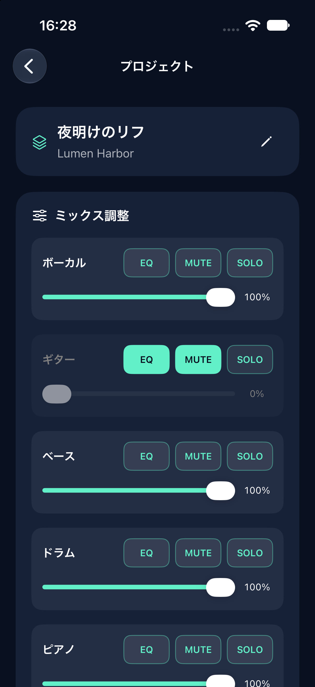
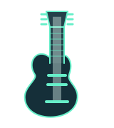
ギターを下げて、バッキングに。
ベースだけを聴いて、フレーズの確認に。
6つのパートから、練習に合うバランスへ。
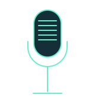
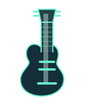
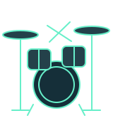
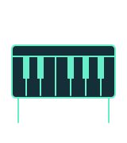
ファイルや、読み込み可能なiTunesライブラリの音源から。曲の途中を開始位置に指定することもできます。
パートごとの音量・MUTE・SOLOを調整。トラック別EQで、確認したい帯域を整えます。
保存した音源はA–Bリピートと速度調整で練習。カウントインで、弾き始めのタイミングをつかみます。
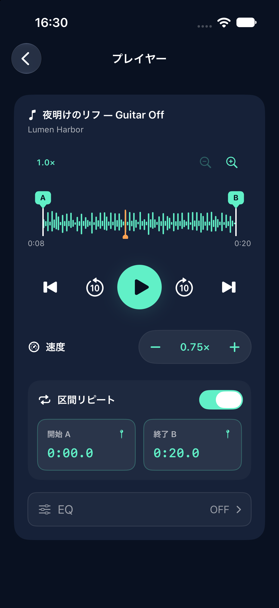
調整したミックスをM4A / WAVで保存。
プロジェクトを開けば、バランスを変えてまた練習できます。
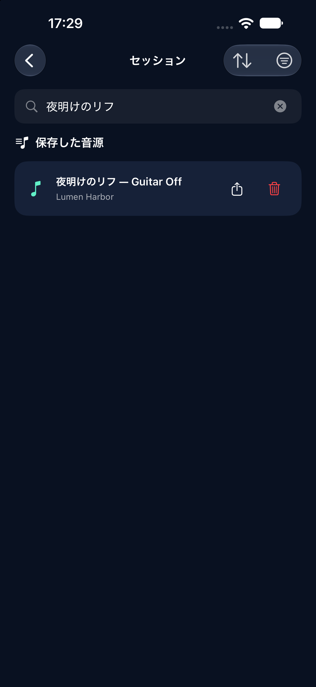
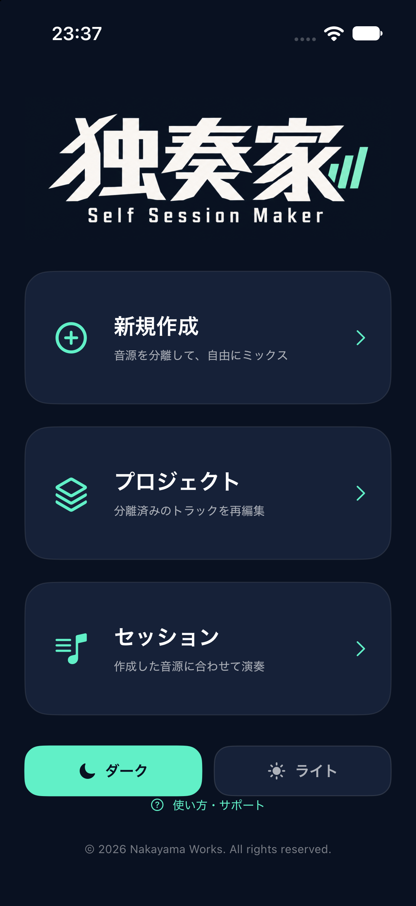
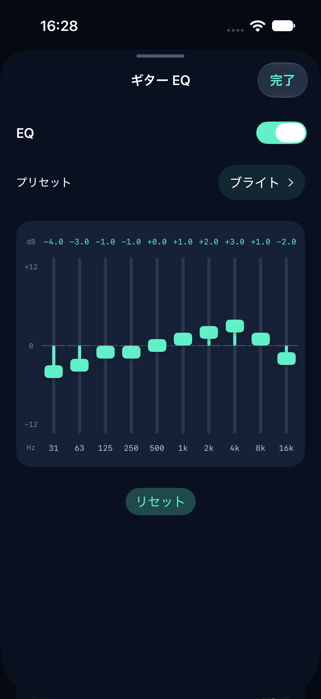
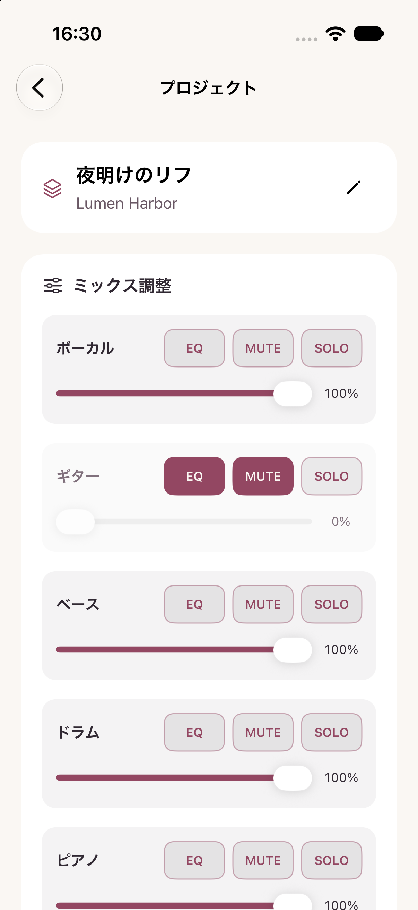
iPhoneのマナーモード（消音モード）、または集中モードの利用をおすすめします。独奏家の使用中だけ自動で切り替えたい場合は、次のように設定できます。
独奏家を開いている間、自動で集中モードを有効にできます。通知の許可設定や繰り返しの着信などの設定によっては、着信・通知が届く場合があります。
ストリーミング楽曲やDRMで保護された音源は分離対象にできません。ファイル、または端末へダウンロード済みで読み込み可能なライブラリ音源が対象です。購入済みでも保護・保存状態によって読み込めない場合があります。
音源によって分離の仕上がりは異なります。他パートの音が混ざる、元の楽器の音が残る、音質が変化する場合があります。
iOS 17以降のiPhone向けです。処理時間や扱える音源の長さは、端末の性能・空き容量・温度等によって異なります。価格と配信開始日はApp Store公開時にご案内します。
音源の権利は元の権利者に帰属します。本アプリは、加工・共有・公開に必要な許諾を付与しません。ご自身が利用する権利を持つ音源をお使いください。
独奏家 - Self Session Maker
iPhone向け / App Store 公開準備中